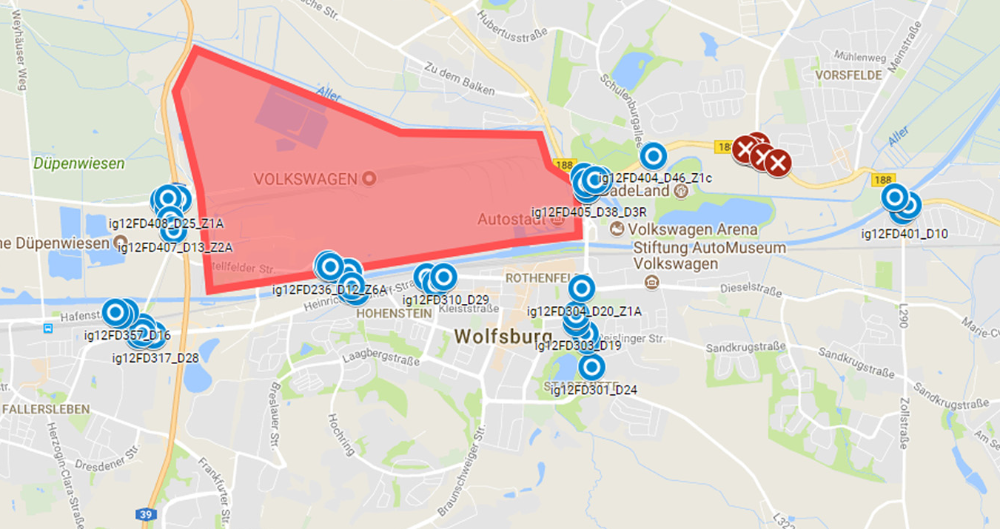

MAGDa - Management und Analyse Geotemporaler Daten
Ein Stauatlas für Wolfsburg
Posted am 18.07.2018In einem früheren Blog-Post wurde bereits der Stauatlas für Dresden vorgestellt - eine Web-Anwendung zur interaktiven Einsicht über Messwerte von städtischen Verkehrssensoren. Im Rahmen des BMWi-Forschungsprojekts ExCELL konnt die Stadt Wolfsburg für eine assoziierte Partnerschaft gewonnen werden. Idee der Partnerschaft ist der Einsatz von im Projekt entwickelten Analysen und Diensten auf Wolfsburger Verkehrsdaten. Dafür wurden von Wolfburg mehrjährige Messreihen zur Verfügung gestellt, deren Auswertungen in diesem Artikel vorgestellt werden.
Die Sensoren
Es wurden Daten von 80 Induktionsschleifen zur Verfügung gestellt. Für eine Verortung in einer Karte war es notwendig die Sensorstandorte aus PDF-Lageplänen zu ermitteln und dann manuell zu digitalisieren. Die folgende Abbildung zeigt die Verteilung der Sensore über die Stadt. Aufgrund seines Einflusses auf den städtischen Verkehr ist das Gelände des Volkswagen-Werkes farblich hervorgehoben.
Validierung der Messwerte
Die übermittelten CSV-Dateinen wurde mit einem Java-Prozess in eine MySQL-Datenbank überführt, deren Tabellenstruktur dem des Stauatlasses entspricht. Für die weitere Auswertung und Aufbereitung der Kartenanwendung war vorgesehen, fehlerhafte Messwerte zu markieren und zu ignorieren. Eine Korrektur wurde noch nicht angestoßen. Für die durchschnittliche Geschwindigkeit ergab sich an den meisten Standorten eine Streuung um die zulässige Höchgeschwindigkeit. Als fehlerhafte Messungen wurden Werte über das doppelte der zugelassenen Geschwindigkeit angesehen, was in den meisten Fällen ein Prozentsatz von 0.01% von allen Messungen eines Sensors entsprach. Für die Belegung wurde ebenfalls ein dynamischer Grenzwert definiert. Es wurde errechnet, wie viele 5 Meter lange Fahrzeuge theoretisch einen Sensor mit einer bestimmten Geschwindigkeit überfahren können. Bei steigender Geschwindigkeit nimmt die Anzahl linaer zu, wie an der roten Linie in der nächsten Abbildung dargestellt ist. Alle Werte links der Linie werden als ungültig angesehen.
Was nach einer großen Menge an fehlerhaften Daten wird in einen 3D-Scatterplot deutlich entschräft. Die Geringste Abdeckung mit validen Werten liegt bei 97,7%.
Zeitliche Auswertung
Mit dem Stauatlas kann der zeitliche Verlauf von Messungen aggregiert auf eine Stunde betrachtet werden. Je nach Menge an Fahrzeugen verändert sich die Größe des Sensorpunktes, je nach Geschwindigkeit die Farbe. Im Rahmen einer Masterarbeit wurden weitere Visualisierungsformen untersucht, die noch nicht im Stauatlas integriert sind. In einer Wochenansicht lassen sich sehr gut die täglichen Rush-Hour-Phasen abbilden. Es ist gut zu erkennen, dass der zweite Peak am Freitag durch einen vorgezogenen Feierabend früher und konzentrierter ausfällt.
Die weiteren Abbildungen zeigen Auswirkungen auf den Verkehr durch Ferienzeiten und besondere Ereignisse wie zum Beispiel ein Erstligaspiel der Wolfsburger Fussballmannschaft.
Zwar sind die Rush-Hour-Phasen und die Stauzonen sicherlich den lokalen Verkehrs- und Stadtplanern bekannt. Dennoch können Datenvisualisierungen und Anwendungen wie der Stauatlas einen besseren Überblick zur gesamten Verkehrssituation der Stadt liefern.
Stauatlas ausprobieren